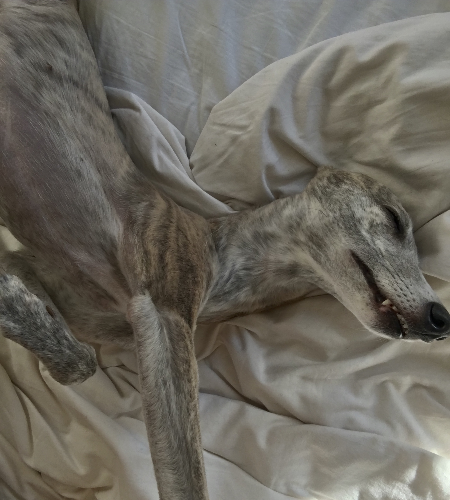

My name is Bella and I am a Whippet. If you do not know what a Whippet is I will tell you (even if you already know I will tell you anyway).
A Whippet is a dog who looks like a Greyhound (but a bit smaller and way more cute), runs really fast and like to sleep for about 80% of the time.
Of course, there are a lot of other things you should know about me. I am 5, almost 6 years old. I was born in Eksjo in Smaland. My top speed is 60 km/h and I weigh about 13 kg. I whine really badly when I do not get the attention that I think that I deserve (which is quite often) and I tend to ruin my parents made-up bed. Also, I really like rabbits and rats (to chase, not to cuddle with).
